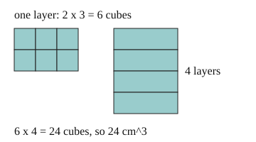

Part of Density. Answer in the chat (1: ..., g: c), add sure or guess after any answer, and say done when finished.
Last time: how many 1 cm cubes fill a 2 cm by 3 cm by 4 cm box? You said a) 9. It is b) 24.

You want to know how much space a box takes up. Fill it with 1 cm cubes: one layer holds length x width of them, and there are as many layers as the box is high. So the volume is length x width x height, in cm^3 (notes 2).
Q1. A box is 5 cm by 2 cm by 3 cm. What is its volume, in cm^3?
30
Right: 5 x 2 x 3 = 30 (notes 2).
Q2. A cube has sides of 4 cm. What is its volume, in cm^3?
12 (sure)
You wrote "12". That is 4 + 4 + 4. Build it in layers: one layer is 4 x 4 cubes. How many layers does a 4 cm cube have? (notes 2)
64
Right: 16 cubes in a layer, 4 layers, 64 cm^3 (notes 2).
Q3. In your own words: why do you multiply the sides and not add them?
each layer is length x width cubes and the height says how many layers, so it is a count of cubes not a length
Right: the volume counts cubes, layer by layer (notes 2).
You can now find the volume of a box.
A block is 2 cm by 2 cm by 5 cm and has a mass of 50 g. How many grams is each cubic centimetre of it?
c (guess)